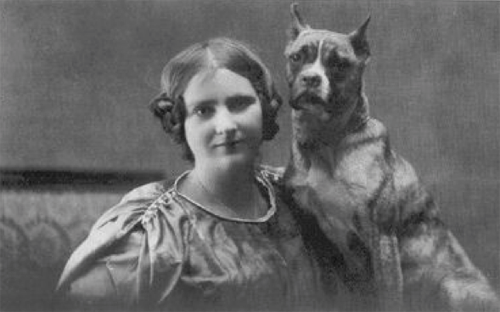

Historia del Boxer
El bóxer desciende de dos razas de origen alemán ya extinguidas. Una de ellas, el Bullenbeissers era perro cazador cuya misión era cazar y mantener la presa retenida en la boca hasta que el cazador llegara para recogerla. Para dicha tarea se necesitaba un perro con la mandíbula ancha, que pudiera agarrar bien la presa. De ahí se hicieron cruces hasta dar con el Bóxer. Un perro de nariz respingona y hocico amplio y chato.
El primer bóxer registrado data de 1895 en Múnich y fue el perro de Philip Stockmann y su esposa Miriam, el matrimonio conocido como los padres de esta raza. Y es que fueron ellos los que la preservaron y la mantuvieron estable después de los conflictos bélicos surgidos en esos tiempos.
